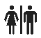
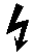

PT-D220
Search symbols, frames, guides…
Browse
01Symbols649 in 30 categories
02Frames99 designs, by number
03Templates15 text · 10 pattern
04Shortcuts22 key combos
Signs · shortcut key Space
1Prohibited
3Flammable
4Warning
9Recycle
13

Restroom19Wheelchair
25No smoking
27

High voltageSymbol → ◀/▶ Pictograph → OK → Space → to 4 → OK